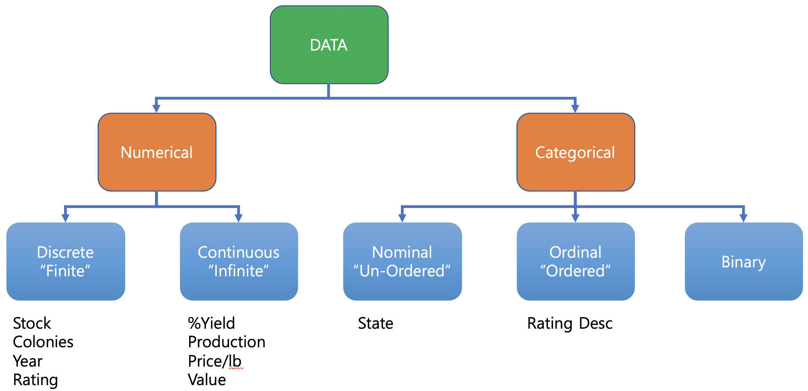
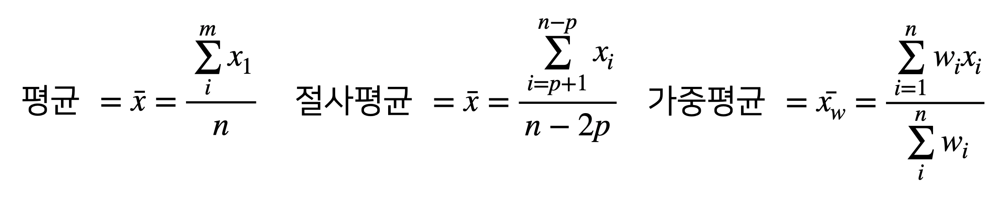
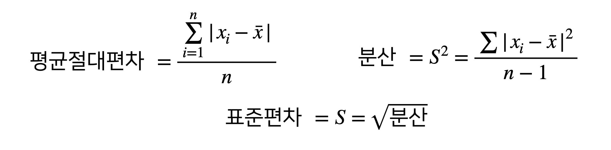

Chapter 6 Basic Statistics
6.1 정형화된 데이터의 종류
| 분류 | 의미 |
|---|---|
| 수치형(Numerical) | 숫자로 표현된 데이터 |
| 이산형(Discrete) | 횟수와 같이 정수 값만 취할 수 있는 데이터 |
| 연속형(Continuous) | 일정범위 안에서 어떤 값이든 취할수 있는 데이터(구간형, 실수형) |
| 번주형(Categoriclal) | 정해진 범주 안의 값만 취할수 있는 데이터 |
| 명목형(Nominal) | 값들 사이에 순서가 없는 범주형 데이터 |
| 순서형(Ordinal) | 값들 사이에 분명한 순서가 있는 범주형 데이터 |
| 이진형(Binary) | 두개의 값만을 갖는 범주형 데이터의 특수한 경우 |

6.2 위치 추정
- 실습 데이터 미국 각 주의 인구와 살인 비율(인구 10만명당 연산 살인 사건)
## State Population Murder.Rate Abbreviation
## 1 Alabama 4779736 5.7 AL
## 2 Alaska 710231 5.6 AK
## 3 Arizona 6392017 4.7 AZ
## 4 Arkansas 2915918 5.6 AR
## 5 California 37253956 4.4 CA
## 6 Colorado 5029196 2.8 CO
## 7 Connecticut 3574097 2.4 CT
## 8 Delaware 897934 5.8 DE
## 9 Florida 18801310 5.8 FL
## 10 Georgia 9687653 5.7 GA
## 11 Hawaii 1360301 1.8 HI
## 12 Idaho 1567582 2.0 ID
## 13 Illinois 12830632 5.3 IL
## 14 Indiana 6483802 5.0 IN
## 15 Iowa 3046355 1.9 IA
## 16 Kansas 2853118 3.1 KS
## 17 Kentucky 4339367 3.6 KY
## 18 Louisiana 4533372 10.3 LA
## 19 Maine 1328361 1.6 ME
## 20 Maryland 5773552 6.1 MD
## 21 Massachusetts 6547629 2.0 MA
## 22 Michigan 9883640 5.4 MI
## 23 Minnesota 5303925 1.6 MN
## 24 Mississippi 2967297 8.6 MS
## 25 Missouri 5988927 6.6 MO
## 26 Montana 989415 3.6 MT
## 27 Nebraska 1826341 2.9 NE
## 28 Nevada 2700551 6.0 NV
## 29 New Hampshire 1316470 0.9 NH
## 30 New Jersey 8791894 3.9 NJ
## 31 New Mexico 2059179 4.8 NM
## 32 New York 19378102 3.1 NY
## 33 North Carolina 9535483 5.1 NC
## 34 North Dakota 672591 3.0 ND
## 35 Ohio 11536504 4.0 OH
## 36 Oklahoma 3751351 4.5 OK
## 37 Oregon 3831074 2.0 OR
## 38 Pennsylvania 12702379 4.8 PA
## 39 Rhode Island 1052567 2.4 RI
## 40 South Carolina 4625364 6.4 SC
## 41 South Dakota 814180 2.3 SD
## 42 Tennessee 6346105 5.7 TN
## 43 Texas 25145561 4.4 TX
## 44 Utah 2763885 2.3 UT
## 45 Vermont 625741 1.6 VT
## 46 Virginia 8001024 4.1 VA
## 47 Washington 6724540 2.5 WA
## 48 West Virginia 1852994 4.0 WV
## 49 Wisconsin 5686986 2.9 WI
## 50 Wyoming 563626 2.7 WY
6.2.4 가중평균
- 데이터에 가중치를 곱한 값의 총합을 가중치의 총합으로 나눈 값
- 상대적 비중을 정할때 사용
- 소비자물가지수 : 소비지출 비중이 큰 항목의 소비자 물가가 변하면 소비자물가지수가 크게 변함
## [1] 4.4458346.3 변위 추정

| 분류 | 의미 |
|---|---|
| 편차(deviation) | 관측값과 위치 중앙값 사이의 차이 (오차, 잔차) |
| 분산(variance) | 평균과의 편차를 제곱한 값들의 합을 n-1 로 나눈 값. n은 데이터의 개수(평균제곱오차) |
| 표준편차(standard deviation) | 분산의 제곱근 (l2노름, 유클리드노름) |
| 평균절대편차(mean absolute deviation) | 평균과의 편차의 절대값의 평균(l1노름, 맨하탄노름) |
| 중간값의 중위절대편차(median absolute deviation from the median) | 중간값과의 편차의 절대값의 중간값 |
| 범위(range) | 데이터의 최대값과 최솟값의 차이 |
| 순서통계량(order statistics) | 최소에서 최대까지 정렬된 데이터 값에 따른 계량형 |
6.4 데이터분포
| 분류 | 의미 |
|---|---|
| 상자그림(Boxplot) | 투키가 데이터의 분포를 시각화하기 위한 간단한 방법으로 소개한 그림 |
| 도수분포표(frequency table) | 어떤 구간(interval)에 해당하는 수치 데이터 값들의 빈도를 나타내는 기록 |
| 히스토그램(histogram) | x축은 구간들을, y축은 빈도수를 나타내는 도수 테이블의 그림 |
| 밀도그림(density plot) | 히스토드램을 부드러운 곡선으로 나타낸 그림. 커널밀도 추정(kernel density estimation)을 주로 사용 |
6.4.1 사분위수(Quantile)
## 5% 25% 50% 75% 95%
## 689529 1833004 4436370 6680312 19118546
6.4.3 도수 분포표(Frequency Table)
변수의 범위를 동일한 크기의 구간으로 나눈 다음, 각 구간마다 몇개의 변수 값이 존재하는지를 보여주기 위해 사용합니다. 즉, 특정 구간에 속하는 자료의 개수를 나타내는 표 입니다.
breaks <- seq(from=min(state[["Population"]]),
to=max(state[["Population"]]), length=11)
pop_freq <- cut(state[["Population"]], breaks=breaks,
right=TRUE, include.lowest = TRUE, dig.lab=10)
pop_freq## [1] (4232659,7901692] [563626,4232659] (4232659,7901692]
## [4] [563626,4232659] (33584923,37253956] (4232659,7901692]
## [7] [563626,4232659] [563626,4232659] (15239758,18908791]
## [10] (7901692,11570725] [563626,4232659] [563626,4232659]
## [13] (11570725,15239758] (4232659,7901692] [563626,4232659]
## [16] [563626,4232659] (4232659,7901692] (4232659,7901692]
## [19] [563626,4232659] (4232659,7901692] (4232659,7901692]
## [22] (7901692,11570725] (4232659,7901692] [563626,4232659]
## [25] (4232659,7901692] [563626,4232659] [563626,4232659]
## [28] [563626,4232659] [563626,4232659] (7901692,11570725]
## [31] [563626,4232659] (18908791,22577824] (7901692,11570725]
## [34] [563626,4232659] (7901692,11570725] [563626,4232659]
## [37] [563626,4232659] (11570725,15239758] [563626,4232659]
## [40] (4232659,7901692] [563626,4232659] (4232659,7901692]
## [43] (22577824,26246857] [563626,4232659] [563626,4232659]
## [46] (7901692,11570725] (4232659,7901692] [563626,4232659]
## [49] (4232659,7901692] [563626,4232659]
## 10 Levels: [563626,4232659] (4232659,7901692] ... (33584923,37253956]## pop_freq
## [563626,4232659] (4232659,7901692] (7901692,11570725] (11570725,15239758]
## 24 14 6 2
## (15239758,18908791] (18908791,22577824] (22577824,26246857] (26246857,29915890]
## 1 1 1 0
## (29915890,33584923] (33584923,37253956]
## 0 1